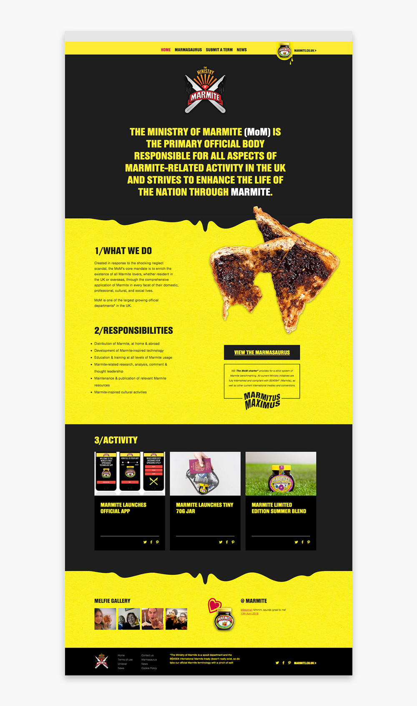
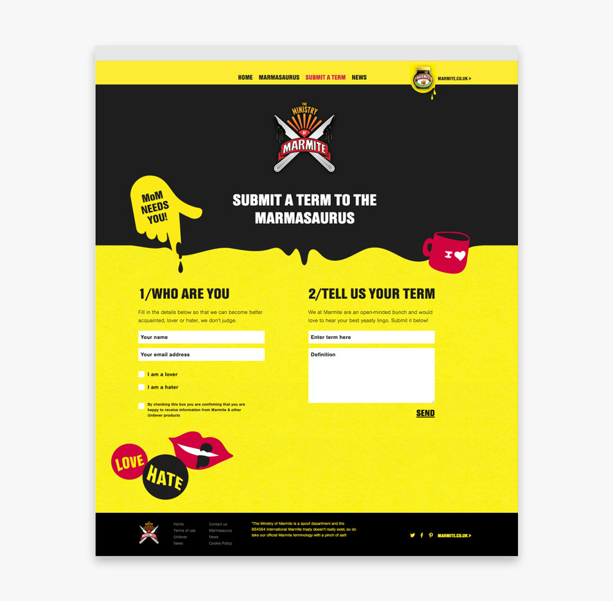

Minstry of Marmite
As the primary official body responsible for all aspects of Marmite-related activity in the UK, the MoM were in need of a site to publish their latest research and technology as well as hard hitting cultural (Marmite) events.
The website houses the Marmasaurus - a dictionary of words, terms and phrases created to define the spreading habits of our nation.